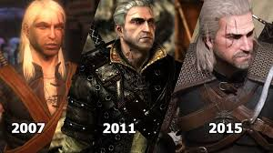
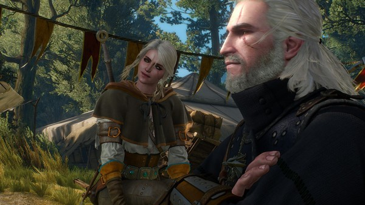

Basic Information
Alias(es) |
Hair Color |
Eye color |
Skin |
Race |
Gender |
|---|---|---|---|---|---|
| White Wolf Gwynbleidd White One Butcher of Blaviken Ravix of Fourhorn Geralt Roger Eric du Haute-Bellegarde (the first name he wanted) |
Milk White | Dark, unspecified color (books) Green (comics, The Hexer) Amber (games, Netflix's The Witcher) |
Pale | Human (witcher) | Male |
Biography
Childhood
Geralt was the son of the sorceress Visenna and, presumably, the warrior Korin, but when he was born Visenna left him with the School of the Wolf at Kaer Morhen. There, Geralt was trained and made to be a witcher. He survived the many blistering mutations required to grant witchers their abilities and passed the Trial of the Grasses. Geralt's intensive training and the mutagenic experimentation carried out upon him, granted him considerably greater strength, speed, endurance, resilience, healing, senses, complete immunity to diseases and conventional poisons, and extreme resistance to pain.Early Life
During his training at the witcher school, he made friends with several students, such as Gweld and Eskel, and was trained by Vesemir in harsh conditions, one in which resulted in a student dying. Geralt was eventually put through the Trial of Forest Eyes, where he was left tied up in the woods and blindfolded and needed to return to the keep by the morning or he would fail. He was helped out of his binds by the elf Aideen, where they went to look at the non-human reservation to find the camp had been attacked by vrans. They then left and came across some Cat School witchers training and wrestling. Aideen then unbound Geralt and left him to return to his master.
Later on, the Wolf School and the Cat School had a tournament between them, organized by King Radowit II who secretly plotted with the Cat School to kill the witchers from the Wolf School. In the first round, Geralt and Gweld faced off, slowly realizing while they were fighting that the whole tournament was a ruse. As they came to that realization however, a druid put a mind control spell upon Gweld which made him violently attack Geralt, forcing Geralt to kill his friend with a sword through the chest. Right after this, soldiers under Radowit's command surrounded the witchers and started to kill them all, but Geralt was able to escape on horseback, causing Radowit to put a bounty on his head. Geralt then came across Aideen again in the woods, who persuaded him not to kill the soldiers who slaughtered his fellow witchers, though he did kill one of Radowit's men that he saw along his trip back to Hertch, where he warned the elders about Radowit and the Cat School's betrayal.
Due to his brilliant success in training, Geralt was selected for additional mutation experiments. He was the only witcher to have survived these experiments, his stark white hair being a side effect of these additional mutations. After finishing his witcher training, Geralt set off into the world on a horse named Roach, a name he would bestow upon every one of his later horses. Thus, he became a monster slayer for hire.
The First Monster
After about 50 miles after leaving Kaer Morhen, Geralt was anxious to kill his first monster. He came across a bald man with rotten teeth, alongside his mates, who were about to rape a young girl. The bald man prepared to rape her as his mates held back her father until Geralt came in and killed the bald man, which frightened the gang off. The young witcher expected thanks, though the reality of the situation soon set in: not only did the father flee with the gang, but the girl, with the bald man's blood on her, threw up, became hysterical, and then passed out when Geralt approached her.
Geralt Of Rivia fighting in Witcher 3 Wild Hunt
Butcher Of Blaviken
An unknown time later, he killed an amphisbaena and went to the court of King Idi of Kovir, where he handed in the head of the beast. However the king's mages, Zavist and Stregobor, told the king that Geralt was little more than a charlatan, so the king didn't pay the witcher anything and demanded he leave Kovir in 12 hours, which Geralt was barely able to do on account of the king's hourglass being broken. Two years later he made his way to Blaviken where the alderman, Caldemeyn, was happy to see the witcher after so many years since Geralt's last visit. While he couldn't offer a reward on a kikimore that Geralt killed nearby, his guards suggested the local mage, Irion, might have some use for it. However, when they arrived at the mage's tower, Geralt immediately saw Irion was actually none other than Stregobor. Once the witcher and mage were alone, the two discussed the past, with Geralt sardonically remarking on how Stregobor talked the former King Idi out of paying him back in Kovir. Pushing this aside, Stregobor revealed he needed Geralt's help: Renfri, a bandit and the leader of a gang, was in town looking to kill him, and therefore he wished for the witcher to kill Renfri. Unfazed by this, Geralt remarked it wasn't his problem and left.
Later that night, Geralt and Caldemeyn went to The Golden Court, the town's inn and where Renfri was staying. Geralt found her gang sans leader, but none of them were very cooperative and just made jokes until one member, Fifteen, challenged him to a fight. However, before it could begin, Renfri appeared and went to talk to Geralt and Caldemeyn in private, with the latter demanding she leave town or be thrown in jail. Unperturbed, Renfri revealed a letter of safe conduct from King Audoen which gave her immunity in Hengfors and Arcsea and after another short discussion, Geralt and the alderman left. That night, as Geralt went to his guest room in Caldemeyn's home, he found Renfri there, who eventually revealed her entire past, including how Stregobor played a part in banishing the princess from her own kingdom on account of her being born during a black sun, setting into play a constant struggle between the two: her trying to kill the mage and the mage trying to kill her. She then asked Geralt to help her kill Stregobor, but the witcher once again refused to take sides. After telling her she should leave town, Renfri remarked on the Tridam ultimatum, before agreeing she'd leave the next day, but in the meantime wished to sleep with Geralt, who obliged.
The next morning though, as Geralt ate breakfast with Caldemeyn and his family, the alderman revealed the deadly meaning behind the Tridam ultimatum, making Geralt realize Renfri's ruse was to take the market-goers hostage and he ran off to the market, which was preparing for its busiest day of the year. When he arrived, he found Renfri's gang, who hadn't acted yet as Renfri went off to give Stregobor the ultimatum first. Not wanting to take chances, Geralt fought with the gang, viciously killing them all off in front of the townspeople before Renfri showed up, who refused to stand down, forcing Geralt to fight and kill her as well. As she died, Stregobor appeared, having seen it all from his crystal ball, and wished to do an autopsy on the dead princess. However, Geralt threatened to slay the mage if he so much as touched Renfri's body, and thus Stregobor left to return to Kovir. The townspeople, not realizing how close they'd come to being hostages and killed off, proceeded to throw stones at Geralt for his actions until Caldemeyn stepped in to stop it. He then asked for Geralt to leave and never return to Blaviken.
Staying In Vengerberg
After the events in Rinde, Yennefer and Geralt started a rather physical relationship, spending the majority of their time at Yennefer 's home in Vengerberg, Aedirn, and putting to good use a wide variety of the sorceress' collection, including a stuffed unicorn, as well as having sex in rather unusual situations, like levitating 30 fanthoms above ground. However, the witcher finally decided to leave after half a year in the city, considering Yennefer's behavior as too possessive. Unable to initiate the parting though, the witcher ran off during the night, leaving only a rose and a letter on the bed as his farewell.

Geralt with Yennefer of Vengerberg
Personality
Most of the time, he could be apathetic, cynical, and threatening. Despite his outwardly cold nature, Dandelion noted that behind his exterior was hiding a fiercely loyal friend, and a man of good humour and as someone not indifferent to suffering. Geralt had many good friends all over the Northern Realms, such as Caldemeyn of Blaviken, Zoltan Chivay, and of course Dandelion. He was also very protective of and loyal to his friends and companions, and was willing to go to great lengths for those who mattered to him. He could be kind-hearted and caring to the people he loved. Geralt was also shown to be extremely adept at allaying intense, and at times bleak, situations and as a man who would much sooner have everyone return home than draw their swords. His lifespan made him a world-weary man, often expressing disdain and circuitous insults to those he considered cruel, foolish, etc. He may have risked Temeria's future to save Triss Merigold from the Nilfgaardians. He also was shown requesting Scoia'tael to spare Dandelion and kill only him. Geralt frequently showed remorse and had revelations in his life. Other times he had complete emotional breakdowns, even giving up being a witcher in general and dropping his morals at one point.
Legacy
The story of Geralt and Ciri became a popular saga many years, probably centuries, after the actual events had taken place. The chief sources of these stories were Dandelion's ballads and the bard's autobiography Half a Century of Poetry. However, Dandelion was not fond of telling the whole truth, and ultimately many versions of Geralt's and Ciri's adventures were spread far and wide, including simplified and harmless children's tales, leading scholars to struggle in distinguishing those stories that were considered canon from those that seemed non-canonical and embellished. Many years in the future, the sorceress Nimue verch Wledyr ap Gwyn and her assistant Condwiramurs Tilly conducted extensive research into the matter, in an attempt to determine what had really happened to Geralt and Ciri.
Chapter 1
Journal entry
A book entitled "The Rivian Pogrom" claims that Geralt, known also as the White Wolf, died during a massacre of non-humans. The pogrom took place in the city of Rivia just after the second war with Nilfgaard. Geralt was killed by an angry mob when he tried to defend the oppressed. The sorceress Triss Merigold and the dwarf Zoltan Chivay witnessed his death. The witcher's body was never found. The bard Dandelion recounts the adventures of the witcher Geralt in his ballads. After reading them, one may conclude that the White Wolf was the most famous witcher of his time. He actively participated in many historical events, such as the mage rebellion on Thanedd Island. Dandelion's poems are mostly devoted to Geralt's fights against monsters, the numerous romantic entanglements for which he is famous, and to his love for a certain sorceress. Some years ago, Geralt of Rivia came to King Foltest's court in search of work. He obtained a contract to free the monarch's daughter Adda from a spell which had turned her into a striga, or to kill her if all else failed. The witcher managed to free the girl from the spell, and discovered that one of the courtiers had been responsible for the curse.

Evolution of Geralt
Witcher 2: Assassin of Kings
Fucking idiot actually went in.
- Geralt on Dandelion willing entering a succubus' lair, The Witcher 2: Assassins of Kings
Journal entry
Behold our hero: subjected to mutations and rigorous sword and sorcery training as a child, he has become a superhuman monster slayer. Always penniless and often disdained by those whom he protects, he wanders the world seeking work. Fate has little mercy for him, piling obstacles in his way, yet he trudges on. He has more scruples than a beggaring bum has fleas. Doubts haunt him even when a band of ruffians, knives drawn, approaches him on the highway. Is he a good man? I do not think so. Does he try to maintain his humanity? I believe he does. You must know that Geralt of Rivia died once already, or at least everyone thought him dead. During a massacre in Rivia, he sought to defend nonhumans and fell to overwhelming odds. Placed in a boat, he floated into the mist, into a realm where he finally found peace, but not for long. Because of forces mentioned later, Geralt returned just in time to defend the witchers' ancient home fortress, and then embarked on a mission to recover the secrets stolen from it. Along the way he took part in a Scoia'tael uprising, shattered a powerful criminal organization, and killed the Grand Master of the Order of the Flaming Rose. All the while his fame as a lover grew. Well, that's Geralt for you. As if all this wasn't enough, he then foiled the attempted assassination of King Foltest of Temeria and became one of the monarch's most trusted men.
Witcher 3: Wild Hunt
The third installment of the trilogy, like its predecessors, follows Geralt through his final adventures. Following the events of Witcher 2, Geralt has regained his memory of the past and prepares to embark on a new journey. In the Witcher 3, Geralt is on the hunt for the only person he considers kin, Ciri. Along his journey, Geralt must face the Wild Hunt in order to protect the people he cares about. In the new open world, Geralt has the opportunity to complete quests that are both part of the main story and side quests. He will also interact with old friends Dandelion and Vesemir along with potential lovers Triss Merigold and Yennefer.
Witcher 3 gameplay launch trailer
Journal entry
Many cannot fathom the friendship Geralt of Rivia and I, Dandelion, have shared all these years. When we first began breaking bread together, spiteful tongues said he'd be better off cutting my throat and dumping my body in a hollow tree – before I provoked someone else into doing that same to us both. Those individuals spoke out of pure jealousy, for Geralt was my dearest friend, a fact which he gave ample evidence of on numerous occasions. I could say a great deal about that world-famous monster hunter, the man known in Elder Speech as Gwynbleidd, or, in our younger (yet no less noble) tongue, as the White Wolf. For Geralt of Rivia is a truly exceptional individual. A brief encounter might tempt one to label him a mere swinger of swords, a simple monster-catcher, a rough-and-tumble practitioner of a dirty trade – but peer closer and you will soon discover he is a man of unplumbed depths, unique views and vast, world-spanning experience. On the surface, he is introverted, tight-lipped, and one might even say gruff, but underneath lies an overflowing sea of goodwill, good humour, and an honest readiness to help his friends, be it with a bit of sound advice or the masterful application of his blade. Setting aside cumbersome false modesty, I can say that I know his story better than any man alive. I was with him through hard times and good, helping with wise advice, warm words and razor wit. As a result, I am a vital part of his story, both in its earlier and present portions. It is thus my duty to continue my chronicle and, for the benefit of future generations, put in writing the next chapter of his deeds and exploits
Hearts of stone expansion
Step again into the shoes of Geralt of Rivia, a professional monster slayer. This time travel back to the wilds of Velen and the nooks and alleys of Oxenfurt where he'll try to complete a contract from the mysterious Man of Glass, hired to defeat a ruthless bandit captain and Redanian nobleman, Olgierd von Everec, a man who possesses the power of immortality. Geralt, caught in a thick tangle of deceit, will need all his cunning and strength to solve the mystery and emerge unscathed.

Geralt with his adopted daughter Cirilla
Blood and Wine expansion
As Geralt of Rivia again, travel to a land untainted by war: the Nilfgaardian region of Toussaint, where you will unravel the horrifying secret behind a beast terrorizing the kingdom. With all trails leading to dead ends, only a witcher can solve the mystery and survive the evil lurking in the night as an atmosphere of carefree indulgence and knightly ritual masks an ancient, bloody secret.
The Witcher adventure game
Geralt is one of the four playable characters in The Witcher: Adventure Game. He is called there "MONSTER SLAYER - DEADLY IN COMBAT".
The Witcher battle arena
Geralt of Rivia was one of playable characters in the now defunct MOBA and had a lot of interesting weapons, skills, and skins. He was a warrior class hero.
Hero description
A witcher, a wandering solution in search of his next problem; a man who's seen as many caves and trolls as he has kings, queens, and courts. In the Arena, Geralt excels as a dueler, but also brings some utility (crowd control support skills) to the table. His first ability (The Way of the Sword) is a three-stage sword attack: Geralt performs a pirouette, then follows it up with two quick slashes. As a witcher, he is also able to wield a simple form of magic called Signs: The Way of Signs enables him to use the Yrden Sign to set a magic trap which slows all opponents in its range. Then there is The Way of Alchemy: after chugging a potion powerful enough to kill one elephant, Geralt gains the strength of three, and his two skills gain new effects: The Way of the Sword now slows enemies, and The Way of Signs now casts the Heliotrope Sign, which not only slows, but also damages opponents.
Skins
- Blue Stripes Jacket - €1,99 - 1000
- Armor Of Loc Muinne - €1,99 - 1000
- Griffin School Garb - €1,99 - 1000
- Armor Of The Cat - €1,99 - 1000
weapons
- Voice of Kaer Morhen - €4,99 - 1000
- Zerrikanian Slasher - €2,99 - 750
- Twin Blade - €2,99 - 750
- Monster Hunter - €0,99 - 500
Age
- Geralt's age is never specified in Andrzej Sapkowski's novels. Wiedźmin: Gra Wyobraźni and CD Projekt's The Witcher franchise state him to be a year younger than Yennefer (thus born in 1174 in correct chronology), while Netflix's The Witcher timeline has him born in 1160. However, the author himself said in Nie bądź, kurwa, taki Geralt interview that the protagonist is "over 50, but he tells no one how much over". Sapkowski proceeded to explain that the witchers age slower than ordinary humans and a 60-year-old witcher would look no older than 45-year-old man. While humans in the world of the Witcher live longer than those from Earth's medieval period, there is still a prejudice towards "giving the job to an old duffer over 50", so Geralt decides to hide his age.
- A common misconception is that Geralt must be over a hundred years old because the Kaer Morhen pogrom occured then. This assumption is however false; the School of the Wolf was functioning years after the massacre, and according to Blood of Elves the last boys were trained there about 25 years before the action of the novel.
- Nenneke is likely older than Geralt, because in the The Voice of Reason, she mentions remembering when Geralt was a child reaching no higher than her waist.
Other
- Most of The Witcher 2 promotional screenshots or artwork featuring Geralt display a fairly different model, an early design, even the cover of the game doesn't use the in-game model for Geralt. A different model was planned to replace Geralt's face from The Witcher, but due to protests in Poland, CDP edited the old model and placed it into the game.